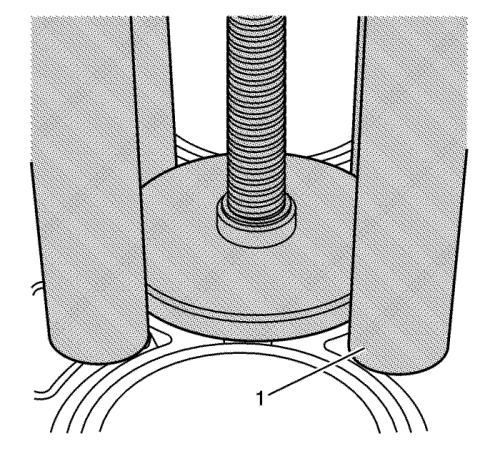
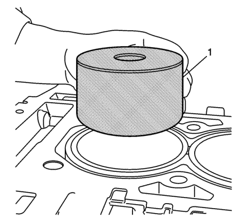
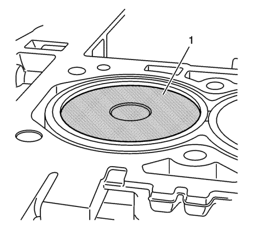
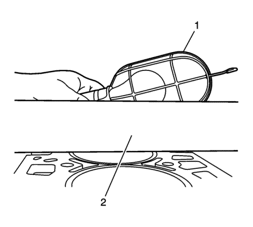
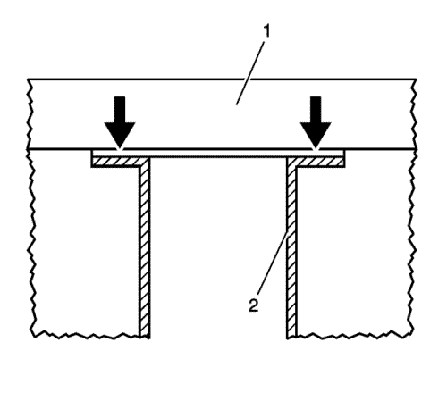
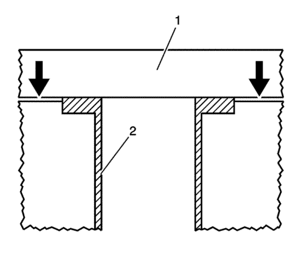

Atención: No utilice medios auxiliares de montaje o lubricantes en el casquillo del calibre del cilindro o en el bloque del calibre del cilindro al montar un nuevo casquillo del calibre del cilindro o pueden producirse daños en el motor. Estos elementos no ayudarán en el montaje del nuevo casquillo del calibre del cilindro.
Atención: No enfríe ni caliente el casquillo del calibre del cilindro o del bloque motor al desmontar o montar un nuevo casquillo del calibre del cilindro. Al enfriar o calentar el casquillo del calibre del cilindro o del bloque motor, se dañará el motor y no ayudará al desmontaje o montaje del nuevo casquillo del calibre del cilindro.
- Coloque el NUEVO casquillo (117) del calibre del cilindro en el bloque del motor.
- Monte el equipo (1) EN-45680-851 con la herramienta de montaje del casquillo del calibre del cilindro EN-45680-883 sobre el casquillo (117) del calibre del cilindro y en el bloque motor. No presione hacia abajo en el casquillo (117) del calibre del cilindro.

Nota: Utilice 4 pernos de culata antiguos como pernos de sujeción.
- Inserte los 4 pernos de sujeción en las patas del equipo (1) EN-45680-851.
Precaución: Consulte Precaución con las fijaciones en la sección Prólogo
- Apriete los 4 pernos de sujeción a 15 N·m (11 lib. pie). No presione hacia abajo en el casquillo (117) del calibre del cilindro.

- Alinee la parte inferior del casquillo (117) del calibre del cilindro con el calibre del cilindro del bloque (100).

- Alinee el husillo de montaje de la herramienta de montaje (1) del casquillo del calibre del cilindro EN-45680-883 en la parte superior del casquillo (117) del calibre del cilindro.

- Alinee el bloque propulsor de la herramienta de montaje (2) del casquillo del calibre del cilindro EN-45680-883 en la ranura del equipo (1) EN-45680-851.

Atención: No utilice herramientas eléctricas o accionadas por aire para girar la barra roscada de la herramienta de montaje del casquillo del calibre del cilindro en el conjunto del equipo o podrían producirse daños en el casquillo del calibre del cilindro.
- Utilizando una carraca, gire la barra roscada de la herramienta de montaje (1) del casquillo del calibre del cilindro EN-45680-883 para montar el casquillo (117) del calibre del cilindro en el bloque motor (100).
- No asiente completamente el casquillo del calibre del cilindro en el bloque. Deje aproximadamente 1/16 pulg. del casquillo del calibre del cilindro por encima de la superficie del bloque motor.

- Utilizando una llave dinamométrica, aplique una torsión de 102 N·m (75 lib. pie) en la barra roscada de la herramienta de montaje (1) del casquillo del calibre del cilindro EN-45680-883, hasta asentar completamente el casquillo del calibre del cilindro en el bloque motor. Con el casquillo del calibre del cilindro montado correctamente, una porción mínima de la brida del casquillo del calibre del cilindro sobresaldrá por encima de la superficie de la plataforma del bloque.

- Desmonte el conjunto del equipo EN-4680-851 con la herramienta de montaje (1) del casquillo del calibre del cilindro EN-45680-883 del bloque motor (100).

Atención: No agujeree ni rectifique el casquillo del calibre del cilindro. El diámetro interior (D.I.) del casquillo del calibre del cilindro está completamente labrado y rectificado y tiene la terminación óptima al enviarlo. Cualquier intento de modificar este tamaño y terminación producida en fábrica con perforación y rectificado adicional dará lugar a daños en el motor, ruido excesivo o consumo anómalo de aceite.
- Una vez instalados los NUEVOS casquillos del calibre del cilindro en el bloque del motor, rebabe el material sobrante de la brida del casquillo del calibre del cilindro.
Atención: Asegúrese de que se han recogido todas las partículas metálicas para evitar daños internos en el motor o en los cojinetes.
- Coloque el tapón (1) de recogida de virutas metálicas EN-45680-884 en el casquillo del calibre del cilindro para ajustarlo. Coloque la parte superior a aproximadamente 3,0 mm (0,12 pulg.) por debajo de la superficie superior del casquillo del calibre del cilindro.
- Coloque tapones de recogida de virutas metálicas EN-45680-884 adicionales en todos los casquillos del calibre del cilindro restantes.

Atención: El montaje del tapón de recogida de virutas metálicas por abajo de la profundidad recomendada creará una disminución del rendimiento del sistema de vacío. Una disminución del rendimiento del sistema de vacío hará que las virutas metálicas entren en el motor y provoquen una avería en el motor.
Atención: El montaje del tapón de recogida de virutas metálicas por encima de la profundidad recomendada producirá daños en el tapón de recogida de virutas metálicas.
- Asegúrese de que el tapón (1) de recogida de virutas metálicas EN-45680-884 está a 3,0 mm (0,12 pulg.) por debajo de la superficie superior del casquillo del calibre del cilindro.
- Asegúrese de que el piloto de reglaje de orificios y la broca de berbiquí se han instalado en el conjunto base de reglaje EN-45680-861:
| • | Broca de berbiquí EN-45680-881, casquillo de 88 mm |
| • | Piloto de reglaje EN-45680-885, casquillo de 88 mm |

Nota: Antes de utilizar el conjunto de la herramienta de reglaje, debe establecerse la altura de las hojas de corte según las especificaciones adecuadas. Las especificaciones adecuadas son que la brida del casquillo del calibre del cilindro debe estar alineado a +0,02 mm (0,0008 pulg.) por encima de la superficie de la plataforma del bloque.
- El lado de la ranura del anillo (1) obturador de galga de espesores en el conjunto de aro de medida EN-45680-886, debe estar situado hacia arriba sobre una superficie plana.

Nota: Asegúrese de que las superficies del anillo obturador de galga de espesores en el conjunto de aro de medida están limpias.
- Coloque con cuidado el conjunto de la herramienta de reglaje EN-45680-861 sobre el anillo obturador de galga de espesores.
- Suelte el tornillo (2) del collarín del eje.
- Empuje el collarín (2) del eje hacia abajo utilizando el precargador (1) de herramienta de reglaje, hasta que el collarín del eje esté colocado frente a la parte superior del cojinete (3) de la brida.
Nota: Una vez realizado este procedimiento, no es necesario reajustar la altura del conjunto de herramienta de reglaje EN-45680-861 hasta que las hojas estén desgastadas, dañadas o se sustituyan.
- Presione hacia abajo en el collarín y en el eje de accionamiento interior utilizando el precargador (1) de herramienta de reglaje y, a continuación, apriete el tornillo del collarín del eje a 19 N·m (14 lib. pie).

- Coloque el conjunto de herramienta de reglaje EN-45680-861 en el cilindro que se va a ajustar, con la flecha (1) de dirección señalando en línea con la línea central del cigüeñal y con la parte frontal del bloque.
- Monte los cuatro pernos (2) EN-45680-864 en los orificios del perno de la culata en el bloque y apriete a 20 N·m (15 lib. pie).

Atención: Para que la herramienta funcione correctamente, debe utilizarse un motor de perforación con una portabroca de 1/2 pulgadas, 1 1/8 hp, 7 amperios, reducción de triple marcha y una velocidad de giro de 450-600 R.P.M. hacia la derecha. Si no se utiliza el motor de perforación adecuado, se producirán daños en el casquillo del calibre del cilindro.
- Fije el adaptador (1) de accionamiento EN-45680-866 en el portabrocas del taladro.
Atención: Asegúrese de que no hay pliegues en el tubo flexible de aire o en el tubo flexible de vacío. Los pliegues en el tubo flexible pueden hacer que las virutas metálicas salgan del aparato cortador, causando daños en el motor.
- Conecte un suministro de aire comprimido (75-125 psi) al conector (3) macho rápido, situado en el conjunto de herramienta de reglaje EN-45680-861. Gire la válvula (2) de aire comprimido a la posición abierta. Esto inicia el sistema de vacío Venturi, que recogerá las virutas metálicas.
Nota: El procedimiento de ajuste no debe tardar más de 15 segundos en completarse. Si lo hace, las brocas de ajuste se deben volver a colocar en una nueva superficie de corte.
- Coloque el adaptador de accionamiento EN-45680-866 y el conjunto (1) de perforación en vertical en el extremo del adaptador de accionamiento del conjunto de herramienta de reglaje EN-45680-861. No empuje hacia abajo sobre el taladro hasta que se haya alcanzado la velocidad de giro completa. Después de alcanzar la velocidad de giro completa, presione gradualmente hacia abajo hasta que se complete la acción de corte, en 5 segundos, aproximadamente.
- Retire adaptador de accionamiento (1) EN-45680-866 y el conjunto de perforación del conjunto de herramienta de reglaje EN-45680-861.
- Apague la válvula (2) de aire comprimido.
- Retire el conjunto de herramienta de reglaje EN-45680-861 del bloque del motor.
- Retire las virutas metálicas que pueda haber en el tapón de recogida de virutas metálicas.
- Limpie el casquillo del calibre del cilindro y las zonas adyacentes de restos de polvo y, a continuación, retire el tapón de recogida de virutas de metal EN-45680-884.

- Monte una regla (2) de filo en el bloque motor, en perpendicular a la línea central del cigüeñal.
- Utilizando una lámpara (1), ilumine la parte posterior de la regla de filo.

- Mirando a la parte frontal de la regla (1) de filo, compruebe si la luz sobresale por la parte inferior de la regla de filo y la parte superior de la brida del casquillo del calibre del cilindro. Si hay luz en cualquiera de los lados o en ambos lados del casquillo (2) del calibre del cilindro, éste se ha cortado incorrectamente y es necesario montar uno nuevo.

- Mirando a la parte frontal de la regla (1) de filo, compruebe si la luz sobresale por la parte inferior de la regla de filo y la parte superior de la superficie de la plataforma del bloque del cilindro. Si hay luz a ambos lados del bloque motor, el casquillo (2) del calibre del cilindro se ha cortado correctamente.
- Continúe con el siguiente casquillo del calibre del cilindro que se va a ajustar, repitiendo los pasos 10-23 si es necesario.